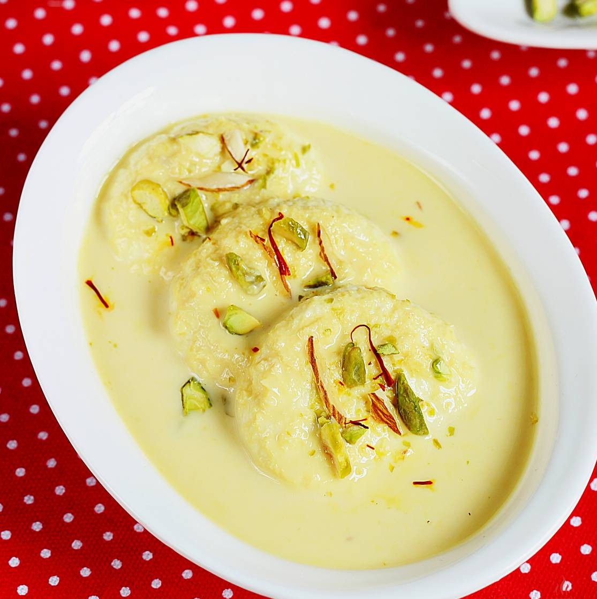

Rasmalai

Nothing's like a Rasmalai made the right way - The Bengali Way.
Rasmalai is a popular Indian dessert made of soft paneer balls soaked in sweet, flavored milk infused with cardamom, saffron, and garnished with nuts.
Ingredients
- Full cream milk : 1 liter
- Lemon juice / vinegar : 2/3 tablespoons (to curdle the milk)
- Water : 4 cups (for sugar syrup)
- Sugar : 1 ½ cups (for sugar syrup)
- Full cream milk : 1 liter
- Sugar : ½ to ¾ cup (adjust to taste)
- Cardamom powder : ½ teaspoon
- Saffron strands : a few
- Chopped pistachios / almonds : 2 tablespoons (for garnish)
Steps
- Make Chenna: Boil milk, add lemon juice/vinegar to curdle, drain curds, rinse, and squeeze out excess water.
- Knead and shape the chenna: Knead chhena until smooth, form small balls, slightly flatten them.
- Cook in the sugar syrup: Boil 4 cups water with 1 ½ cups sugar, add chhena balls, cook 10–12 min until they double in size, then cool in water.
- Prepare Rabri: Boil 1 liter milk, reduce slightly, add sugar, cardamom, saffron, and mix well. Cool to room temperature.
- Assemble & garnish: Squeeze syrup from rasgullas, place in a dish, pour rabri over, sprinkle chopped nuts, and refrigerate before serving.
Home